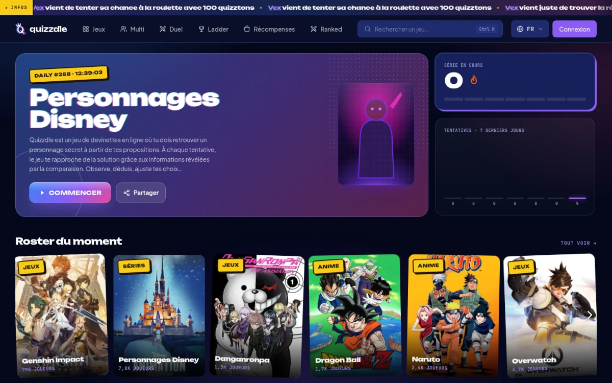
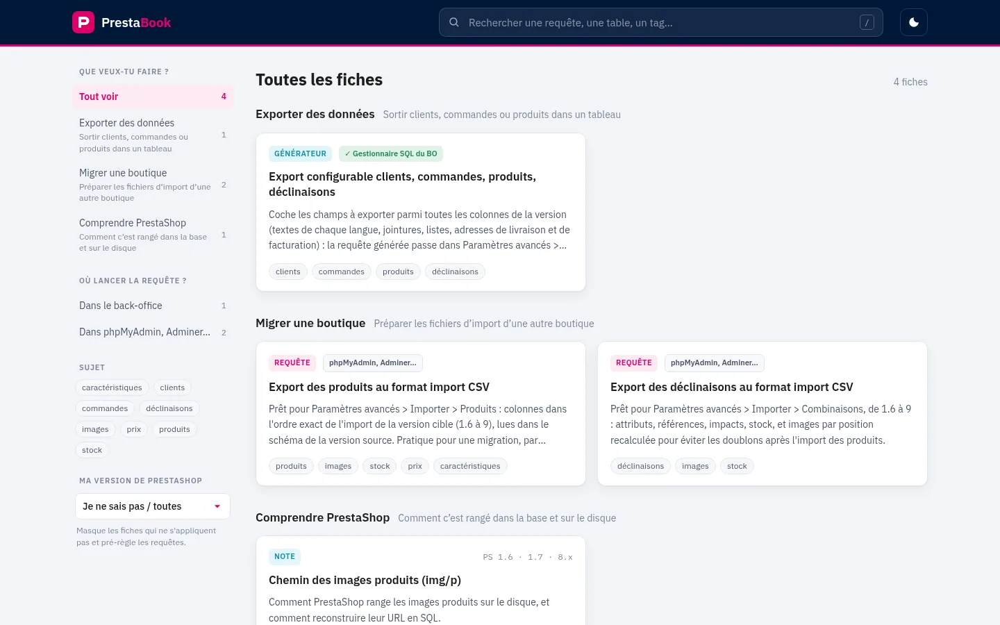
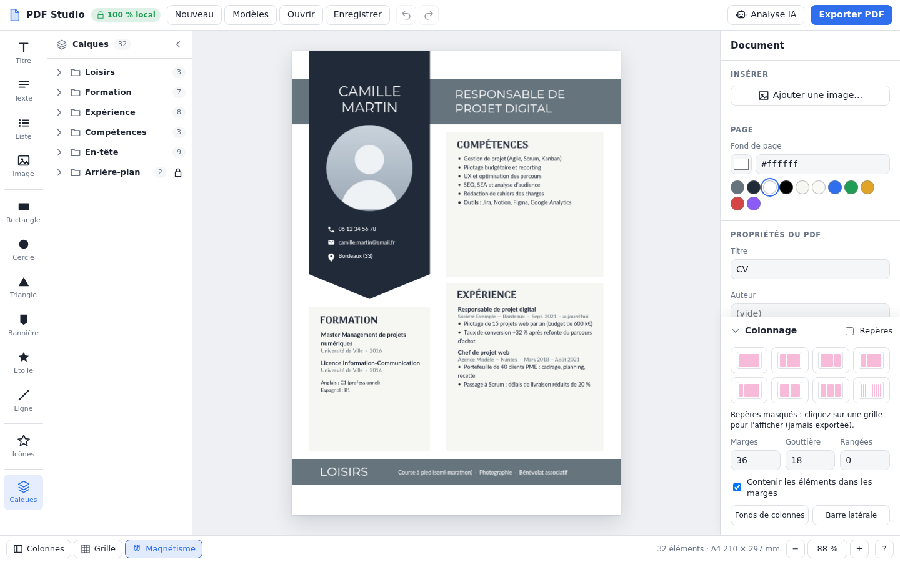
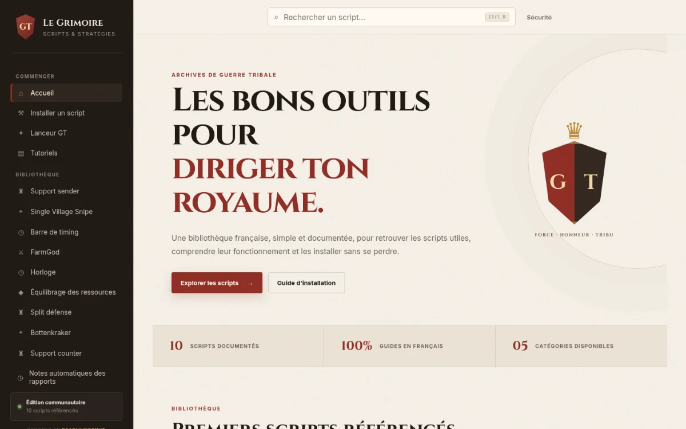

Quizzdle
Jeu de devinettes quotidien sur des dizaines d'univers : modes multi, duel et classé, classements, récompenses, site bilingue FR / EN. Réalisé en coopération avec Théo L'Arbalestrier.

Bordeaux et alentours
Développeur web full-stack · E-commerce & sur-mesure. Je conçois et développe
01 — Qui suis-je ?
Développeur web full-stack en agence, je conçois des boutiques e‑commerce PrestaShop, des modules sur-mesure, des sites WordPress et des outils métier qui simplifient le quotidien des entreprises.
De l'intégration front au back-end, du développement from scratch à la maintenance d'applications en production, j'accompagne les projets sur toute leur durée de vie. J'intègre l'IA à ma façon de travailler pour livrer plus vite, sans rien céder sur la qualité du code.
Reconverti après un parcours dans le sport et l'éducation, j'en ai gardé l'essentiel : l'esprit d'équipe, la pédagogie et le goût du travail bien fait.
Ancien étudiant en STAPS
Toujours un side project en cours
Cinéma, art
02 — Savoir-faire
Une palette complète pour mener un projet web de la maquette à la mise en production, puis le faire vivre.
Interfaces responsives, fidèles aux maquettes, rapides et accessibles.
API, logique métier, bases de données et intégrations tierces.
Applications et outils métier sur-mesure, pensés pour durer.
PrestaShop, WordPress : thèmes, modules et personnalisations avancées.
Montées de version, correctifs, sécurité et évolutions continues.
L'IA au service du développement : productivité, qualité et automatisation.
03 — Réalisations
Jeu de devinettes quotidien sur des dizaines d'univers : modes multi, duel et classé, classements, récompenses, site bilingue FR / EN. Réalisé en coopération avec Théo L'Arbalestrier.

Base de connaissances PrestaShop : requêtes SQL, générateur d'exports configurable et notes techniques, filtrables par besoin et par version (1.6 à 9).

Créateur de CV et de lettres de motivation en ligne, avec modèles personnalisables et export PDF. Sans inscription : vos documents restent dans votre navigateur, sans collecte ni conservation de vos données personnelles sur un serveur.

Bibliothèque communautaire de scripts pour Guerre Tribale : recherche instantanée, scripts documentés et guides d'installation en français.

Projets clients confidentiels
Création, refonte et personnalisation de sites e‑commerce.
Modules sur-mesure, dont certains publiés en open source.
Applications internes développées from scratch.
Intégration, extensions, maintenance et mises à jour.
04 — Trajectoire
Agence web
Boutiques PrestaShop, modules sur-mesure, sites WordPress, outils métier, maintenance et évolutions.
Université de Bordeaux
Un an de formation en alternance, entre cours à l'université et projets en entreprise.
Agence web
Première expérience en agence, jusqu'en septembre 2022, à la sortie de l'AFPA.
AFPA de Bègles
Lycée Danton (Brive) · Collège Gaucelm Faidit (Uzerche)
ASPTT Limoges Football Club
Université de Limoges · Lycée Georges Cabanis, Brive
05 — Contact
Une boutique à lancer, un module à développer, un outil métier à imaginer ? Parlons-en, je vous réponds rapidement.
Bordeaux et alentours